前三章我們依序認識了 VIX 指數、VIX 期貨與相關 ETP，也看到做空 VIX 既有長期正價差的優勢，卻也背著波動率末日的風險。這一章是整個系列的重頭戲：把上一章預告的輪換策略，拿到十幾年的歷史數據上回測，看看它究竟表現如何。 本章分三個部分：先介紹推升VIX 反向型 ETP 的真正作用力，也就是 VX30的滾動收益率；接著說明衡量策略好壞的指標；最後是策略的規則、回測方法與歷史回測的綜合比較。
免責聲明
一、VIX 反向型 ETP的推升動力 ：VX30:VIX滾動收益率
第二章提到，VIX 短期期貨指數持有前兩個月的期貨，並依到期日遠近以線性權重分配。這裡我們把它濃縮成一個數字：定義一個組成 VIX 短期期貨指數的線性加權期貨價格 VX30。
VX30=M1 × DE1 × (100%) / TE1 + M2 × (TE1 - DE1) × (100% / TE1)
其中:
• M1：首月期貨價格。
•
M2：次月期貨價格。
•
DE1：首月期貨到期剩餘日。
•
TE1：首月期貨到期週期總交易日；100% ÷ TE1 代表每天滾動的部位比例。
我們以
2025/7/11 的 VIX 期貨期限結構為例，代入上面的公式：
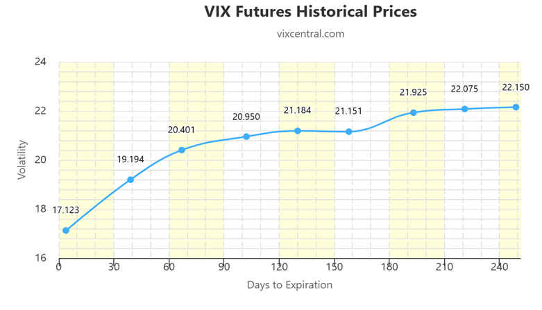
圖 1 2025/7/11 的 VIX 期貨期限結構（資料來源：vixcentral.com）
|
項目 |
數值（2025/7/11
美股期貨收盤） |
|
M1 |
17.123 |
|
M2 |
19.194 |
|
DE1 |
4（M1
於
4 個交易日後到期） |
|
TE1 |
27（M1
整個到期週期為
27 個交易日） |
|
100% ÷ TE1 |
3.7%（每天轉移
3.7% 的首月期貨至次月） |
|
VX30 |
18.89 |
VX30 可以想成「期限結構曲線上，距今剛好 30 天的位置」。把它標在圖上，可以和當天的 VIX 現貨價格對照：
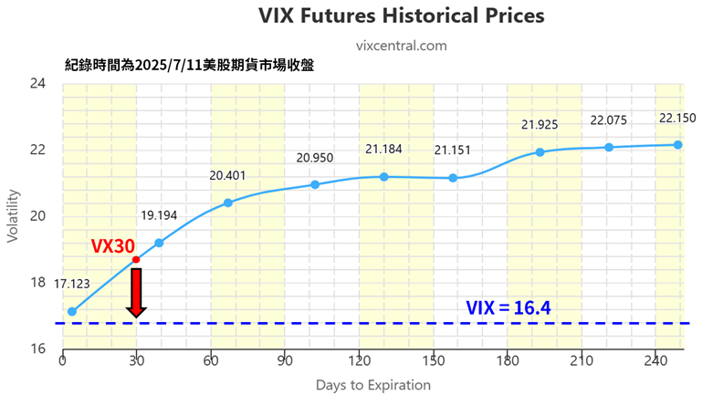
圖 2 VX30 與 VIX 現貨價格（紀錄時間為
2025/7/11 美股期貨市場收盤；資料來源：vixcentral.com）
當天 VX30 = 18.89，高於 VIX 現貨的 16.4。兩者之間的差距，就是下面這個公式所衡量的：
VX30:VIX 的滾動收益率（Roll yield）= (VX30 − VIX) ÷ VIX × 100%
以圖中數字代入，這一天的滾動收益率約為 15%。這項數據的大小，影響著 VIX 反向型 ETP 的走勢趨勢：正值越大，代表期貨相對現貨的正價差越明顯，也就是第三章說的反向型 ETP 無形中向上攀升的助力。
當然，並非觀察
VX30:VIX Roll yield 就一定能夠預測準確的波動率走勢。但根據回測歷史數據來看，VX30 Roll yield 真的不失為一個觀察波動率趨勢的領先指標。
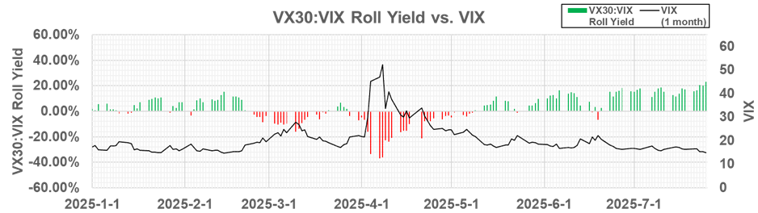
圖 3 VX30:VIX
Roll Yield 與
VIX（2025/1/1
起）
從圖 3 可以看到，2025
年 4 月初關稅風暴期間，VIX 飆升的同時，滾動收益率也轉為深度負值；市場回穩後，則重新回到正值。
接著，我們就準備進入這個系列文最終的重頭戲：波動率投資策略的歷史回測。
二、如何衡量策略的好壞
在看投資策略的歷史回測之前，我們需要先認識以下幾個指標：年化報酬率、年化標準差、夏普值與最大回撤。
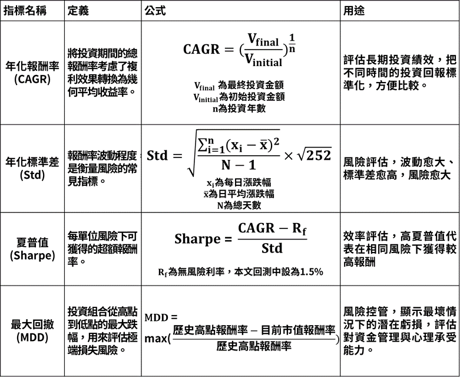
圖 4 策略評估指標的定義與公式
這裡再補充兩點：夏普值公式中的無風險利率 Rf，在本文回測中設為 1.5%；除了最大回撤(MDD)，後面的比較還會看「單日最大回撤」(Daily MDD)，也就是單日最大的跌幅，用來看極端單日風險。
三、波動率戰術資產配置策略(VTS)
這裡要介紹的，正是前一章提到的 VTS：Brent Osachoff 所提出的資產輪換策略。他的策略有專屬的波動率評估指標作為判斷依據(稱為 Volatility Barometer，這是他的商業機密)，但我們可以從他分享的公開資訊，拿 VX30:VIX Roll yield 作為最基礎的策略指標。

圖 5 VTS
Tactical Volatility Strategy（參考來源：volatilitytradingstrategies.com）
以下是我訂定的詳細交易策略：
|
當天美股期貨收盤時的
VX30:VIX Roll yield |
隔天持有 |
|
大於歷史
50 百分位數 |
做空
VIX（持有
SVXY 或
SVIX） |
|
介於歷史
50 至
2 百分位數 |
黃金（GLD） |
|
小於歷史
2 百分位數 |
做多
VIX（持有
VXZ） |
回測方式很單純，使用
Excel 就可以做到。那麼，這個策略的市場擇時（Market timing）效果，究竟如何呢？
四、回測方法：用 Excel 就能做
下面是回測用的
Excel 大概的樣子。第一張圖是每日的原始數據：
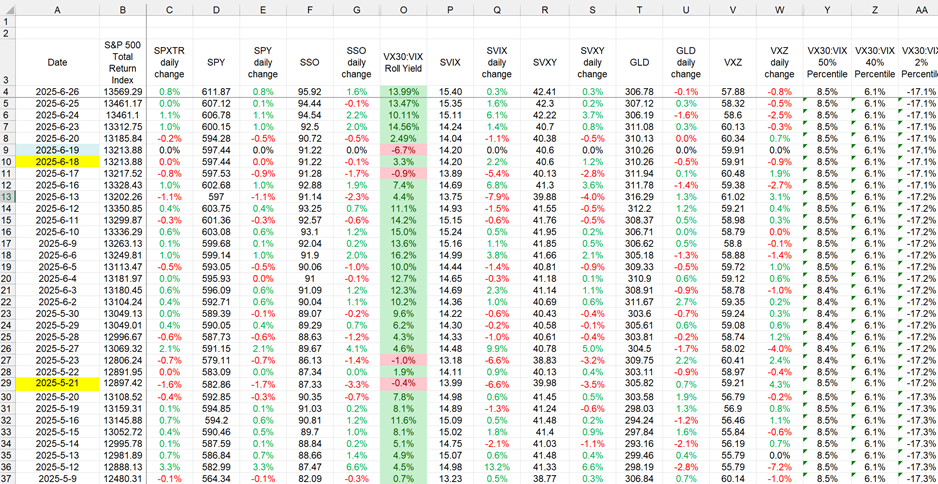
圖 6 回測用
Excel：每日價格與
VX30:VIX Roll yield
•
波動率投資策略所需的資產每日收盤價格，部分價格使用 VTS 提供之模擬資料，範圍取 2004 年 12 月至 2025 年 6 月底。
•
作為比較基準的資產每日收盤價格，範圍取 2004 年 3 月至 2025 年 6 月底。
•
VX30:VIX Roll yield 基於每日 VIX 期貨收盤價計算。
•
百分位數採用滾動計算，只用到當天以前的歷史數據，以避免前視偏誤（Look-ahead bias）。
第二張圖則是策略的每日持有資產與績效：
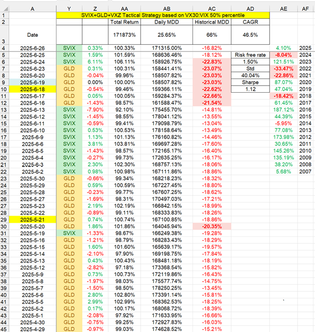
圖 7 回測用
Excel：每日持有資產、報酬率與回撤
•
每日持有資產：依前一天的訊號決定。
•
每日報酬率：以資產前後兩天收盤價計算。
•
累積報酬率、距前高回撤、年度報酬率：由每日報酬率累計而得。
註：此歷史回測分析並未考量交易成本和滑價，只能算是最粗淺的分析，不等於實際交易情形。實際交易情形會需要考慮諸如「隔天開盤跳空」的情形，報酬率就會和表格上有所差異，千萬不要只以單一指標就作為進出場依據。
五、策略歷史回測綜合比較
比較對象包含：大盤（SPXTR）、買入並持有
SSO、買入並持有 SVXY、買入並持有 SVIX，以及兩組輪換策略：SVXY+GLD+VXZ
與 SVIX+GLD+VXZ。下表為綜合指標（數據截至 2025/6/26，綠色為最佳、紅色為最差）：
|
|
Benchmark:
SPXTR |
Buy
& Hold SSO |
Buy
& Hold SVXY |
Buy
& Hold SVIX |
SVXY+GLD+VXZ
輪換策略 |
SVIX+GLD+VXZ
輪換策略 |
|
年化報酬率
CAGR |
10.6% |
13.3% |
9.8% |
8.6% |
29.2% |
46.5% |
|
年化標準差
Std |
19.7% |
38.8% |
36.6% |
67.1% |
25.6% |
40.0% |
|
夏普值
Sharpe |
0.46 |
0.30 |
0.23 |
0.11 |
1.08 |
1.12 |
|
歷史最大回撤
Historical MDD |
55.3% |
85.5% |
72.0% |
92.6% |
42.1% |
66.1% |
|
單日最大回撤
Daily MDD |
12.0% |
23.4% |
48.1% |
41.7% |
15.3% |
25.6% |
接著是逐年的報酬率比較：
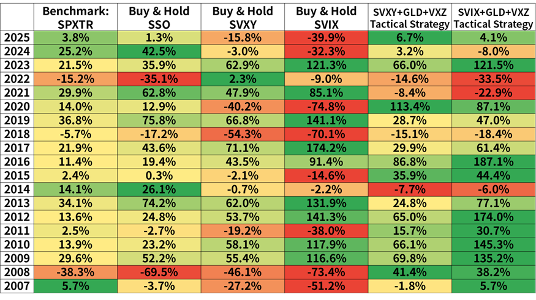
圖 8 年度報酬率比較（數據截至
2025/6/26）
先看買入並持有的情形。下面兩張圖是歷史績效與最大回撤，其中藍色為 SPXTR、黃色為 SSO、綠色為
SVXY、紅色為 SVIX：
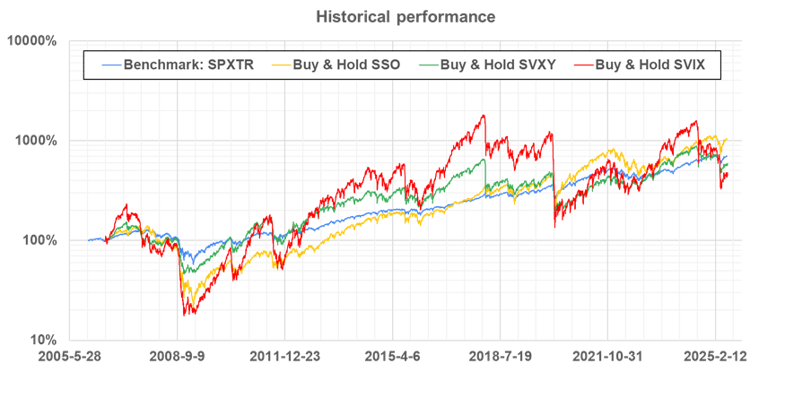
圖 9 買入並持有的歷史績效（對數座標）
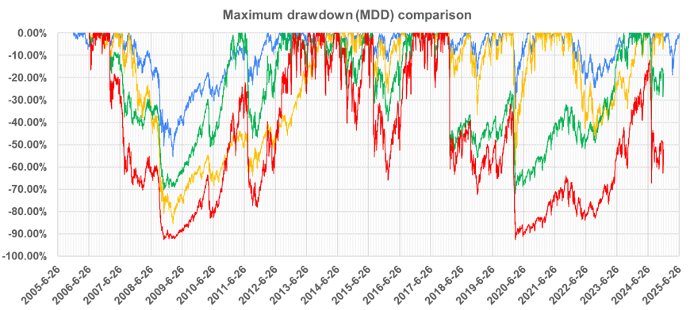
圖 10 買入並持有的最大回撤比較（顏色同圖
9）
再看加入輪換策略之後。圖中標示三個時期：金融海嘯、新冠疫情與 FED 暴力升息。
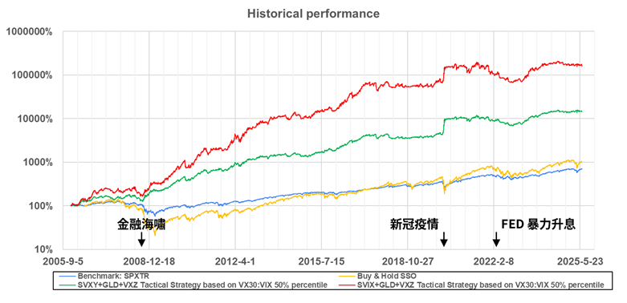
圖 11 輪換策略的歷史績效（對數座標）
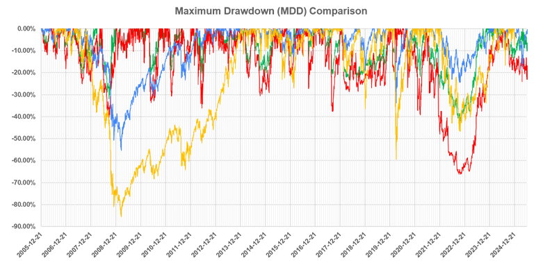
圖 12 輪換策略的最大回撤比較（藍：SPXTR、黃：SSO、綠：SVXY+GLD+VXZ、紅：SVIX+GLD+VXZ）
六、心得感想
•
可以看到，波動率投資策略在金融海嘯、新冠疫情的大空頭時期都有傑出的表現，甚至 2020 年還逆勢獲利。唯一比較大的失常是 2022 年，很大的原因是當年幾乎所有資產價格表現都不好，連黃金也是。
•
使用波動率戰術資產配置策略，能夠有效降低長期持有 VIX 期貨反向型
ETP 遭遇波動率末日的風險，報酬率大幅提升，同時也有效降低波動性。
• 雖然年化報酬率遠超長期持有大盤和大盤槓桿型 ETF，夏普值也顯著提高，但觀察波動性依舊非常可觀，需要一定程度的風險承受能力與心理建設。
• 如果無法忍受資產遭遇空頭時腰斬的可能性，SVXY+GLD+VXZ 會是較適合也足夠優秀的輪換組合（歷史最大回撤 42.1%，比大盤還低）。然而本於生命週期投資法的理念，我當下是選擇 SVIX+GLD+VXZ 的方式，爭取最大的年化報酬率機會（但也不打算配置超過總資產 20%），可能會在年屆退休之際再考慮轉成 SVXY。